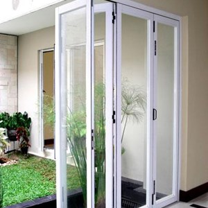

Kian berkembangnya kemajuan zaman, menjadikan banyak bahan atau material komplemen yang bisa mempercantik hunian atau tempat usaha anda. Banyak material pensupport yang dapat diaplikasikan seperti kaca, parket lantai kayu dan masih banyak lagi. Tidak hanya memperindah, namun material pelangkap tersebut dapat memberi garansi keamanan pada penghuni di dalamnya. Namun, tak hanya estetika namun juga keamanan bagi penghuni di dalamnya. Tak halnya hadir bermacam-macam material kaca dan juga lantai yang semakin melengkapi nilai estetika sebuah bangunan.
Tak kaca tempered, kaca shower, kanopi kaca, parket kayu jati dan masih banyak lagi. Tiap kaca memiliki fungsi masing-masing yang membuat banyak orang semakin mebutuhkannya dari hari ke hari. Berikut ini sedikit ulasan mengenai kaca bagi sebuah banguanan, fungsi utama dan bagaiman memilih kaca yang cocok untuk sebuah hunian bagus rumah, kantor ataupun gedung. Akan di jelaskan juga mengenai lantai kayu jati terbaik yang bisa anda beli.
Jasa Maintenance Kaca Sukabumi
Jasa maintenance kaca Sukabumi menawarkan pelayanan perawatan bahan bangunan yang terbuat dari kaca. Salah satunya pelayanan berupa pembersihan gedung yang terbuat dari kaca. Beragam, kaca akan tampak kusam karena telah lama tidak dibersihkan. Selain hanya membersihkan kaca, jasa maintenance kaca Sukabumi juga bisa mengerjakan pembenaran.
Dengan mengaplikasikan bahan pembersih yang akan membikin kaca tampak bersih seperti pertama kali dipasang.
Dis.or.id yaitu perusahaan jasa di bidang maintenance kaca Sukabumi gedung dengan memberikan beberapa pelayanan. Salah satunya pelayanan berupa pembersihan kaca dengan memakai alat pembersih yang bisa membikin kaca gedung Anda tampak bersih seperti sediakala. Tersedia alat penyokong supaya segala sisi gedung yang terbuat dari kaca bisa dipastikan semua sisi gedung dapat di bersihkan. Dis.or.id juga sudah mempersiapkan dengan berjenis-jenis alat yang bisa diterapkan untuk menjangkau seluruh sudut gedung, sekalipun gedung Anda amat tinggi. Oleh sebab itu, dis.or.id cuma memilih orang-orang yang sungguh-sungguh profesional dan telah memiliki pengalaman dalam hal maintenance kaca Sukabumi . Dengan telah memberikan training kepada daya spesialis sehingga mereka sudah bisa melakukan profesi mereka dengan amat baik. Kecuali hanya dalam hal membersihkan kaca, mereka juga kapabel menjalankan perbaikan serta penggantian kaca yang mengalami kerusakan.
Info Pemesanan Selengkapnya
Google Maps: https://www.google.com/maps/d/u/0/viewer?mid=1p_FromQbeWpcNOhOEjbFkVYqH9Hbcdtt&ll=-7.27380280025364%2C112.65243155000007&z=18
Note: https://www.facebook.com/notes/distributor-of-industrial-supply/kontraktor-jasa-maintenance-kaca-gedung-rusak-pecah-kusam-dlsb/1785712251728654/
Event: https://www.facebook.com/events/1976326045988519/
Portfolio Produk: https://www.facebook.com/1681607345472479/photos/?tab=album&album_id=1712630562370157
Distributor & Supplier Kaca Shower
Kaca shower kini menjadi suatu hal yang banyak diminati karena banyak orang yang mengharapkan sebuah kamar mandi yang mempunyai fungsi kecuali keindahan merupakan kenyamanan. Salah satu cara yang bisa diaplikasikan untuk mewujudkan kamar mandi yang senantiasa bersih ialah menggunakan shower karena metode pembersihannya memang jauh lebih praktis dibanding dengan yang mengaplikasikan konsep bak mandi. Kaca shower ini dapat menjadi dan memiliki nilai estetika tersendiri karena dengan memasangnya tentu kamar mandi anda akan nampak lebih menawan dan mewah layknya kamar mani hotel. Cara ini memang desain shower berbahan kaca memang lebih banyak diaplikasikan ketimbang desain shower berbahan tirai. Di samping pintu kaca shower akan membikin kamar mandi kecil tampak lebih besar.
Dis.or.id menyediakan kaca shower dengan mutu premium sehingga dikala dipasang akan segera terlihat mewah. Tak terbaik dan harga relatif murah.
Distributor, Supplier & Jasa Pasang Kanopi Kaca

Salah satu ragam kanopi kaca yang dapat anda aplikasikan pada atap adalah atap kaca skylight yang adalah kanopi kaca dalam bentuk jendela horizontal atau kubah yang lazimnya ditempatkan di atap bangunan yang mempunyai maksud untuk pencahayaan ruangan. Atap kaca skylight banyak diaplikasikan pada rumah, gedung, kantor, café yang mengusung gaya modern untuk membikin efek cahaya yang dramatis pada ruangan komponen bawahnya serta memberi kesan modern pada bangunan. Canopy kaca dengan atap kaca memang sebuah bangunan yang asangat elgan untuk jaman modern seperti sekarang ini dengan harga yang benar-benar lumayan kalau di bandingkan kanopi atap biasa. Harga atap kaca per meter persegi juga sungguh-sungguh diberi pengaruh oleh struktur penyokong yang di gunakan. {Bila tembus pandang, kaca meresap sinar yang masuk sehingga kian tebal kaca maka semakin sedikit sinar yang dapat melaluinya, maka sifat transparannya makin berkurang.|Di samping pintu kaca shower akan membuat kamar mandi kecil kelihatan lebih besar. Atap akrilik atau bisa juga disebut atap kaca acrylic ini banyak ditemukan di sebuah bangunan rumah, seperti ruko, apartemen, cafe, mall, hingga bangunan gedung.
Sekarang anda dapat menerima kanopi kaca dengan mutu terbaik dan juga berkualitas di dis.or.id. Terdapat banyak kanopi dengan pelbagai ukuran dan ketebalan yang bisa anda pilih sesuai dengan yang anda butuhkan. Banyak bangunan seperti gedung perkantoran, perumahan, ruko dan apartement yang memakai kanopi kaca tempered. Kalau fungsi utama kanopi sebagai pelindung untuk bangunan tersebut, pemasangan kanopi kaca juga bisa membikin bangunan menjadi tampak lebih indah dan menarik, apalagi menggunakan konsep yang sama dengan konsep rumah minimalis. Disana anda akan memperoleh kanopi kaca yang sesuai dengan berjenis-jenis ketebalan dan harga yang cukup terjangkau.
Jasa Pemasangan Kaca Tempered
Tidak yang sudah di kenal bahwa jasa pemasangan kaca tempered hanya dilakukan oleh orang yang profesional. Kaca tipe Tempered memiliki energi 4-5 kali lebih baik dibandingi kaca biasa dengan ketebalan yang sama. Sekarang, semakin banyak properti yang mengaplikasikan kaca tempered. Kecuali ini tak lain karena kian banyak orang yang memahami kwalitas serta keunggulan dari kaca tempered ini.
Banyak hal yang bisa dilakukakn kaca tempered ini salah satunya sebagai pembatas, untuk kamar mandi dan masih banyak lagi. Harga untuk tiap-tiap pemasangan dijamin termurah dan hasil progres yang cocok dengan harapan anda. Dis.or.id menawarkan jasa pemasangan kaca tempered sebab kami mempunyai alat yang komplit. Harga yang ditawarkan untuk pemasangan kaca tempered sangat murah.
Distributor & Supplier Pintu Kaca

Pintu kaca betul-betul berguna bagi anda yang mau menabah kesan gedung lebih menawan dan mewah. Ada banyak desain pintu kaca yang bisa kita temui seperti pintu kaca berbentuk sliding (geser) atau folding (lipat). Dengan beraneka varian pigura seperti bingkai kayu atau almunium dan tanpa bingkai atau frameless yang yakni desain pintu kaca tanpa bingkai. Mengenai modelnya, Anda dapat putuskan apakah berharap memiliki pintu kaca desain lipat, geser, atau contoh yang lain.
Kaca yang di gunakan yaitu kaca dengan mutu terbaik. Untuk budget yang lebih sedikit, Anda bisa memilih ragam kaca non-tempered.
Jual Kaca Cermin

Kaca cermin dapat dibuat aksesoris untuk mempercantik interior rumah Anda. Kaca cermin juga dihasilkan untuk yang lain seperti pintu. Kini, cermin tidak cuma berbentuk persegi saja. Ukurannya malah bisa Anda sesuaikan dengan keperluan. Cermin dengan berjenis-jenis ukuran juga tersedia. Malah, ada juga desain kaca cermin yang unik. Sementara itu, dikala diamati dari luar, kaca ini reflektif. Artinya, Anda tidak bisa memandang yang ada di dalam ruangan.
Dis.or.id merupakan penyedia bermacam ukuran kaca cermin yang bisa anda aplikasikan ke gedung, kantor ataupun rumah anda. Malah, Anda dapat pakai kaca cermin ini sekaligus sebagai material utama, seperti sebagai pintu lemari di kamar tidur Anda. Ada yang terbuat dari plastik, kayu, dan aluminum. Atau barangkali Anda mengharapkan kaca cermin yang segera bisa dilekatkan pada komponen furniture tertentu seperti pintu lemari. Tidak figur lemari baju di mana komponen pintunya terbuat dari kaca cermin. Cermin ini lazimnya ditempatkan di kamar mandi, di atas wastafel, atau di kamar tidur. Tersedia kaca cermin dengan berbagai ukuran yang bisa anda pesan di dis.or.id. Melainkan kunjungi dan dapatkan berita menarik mengenai kaca cermin asa anda. Tak anda tertarik untuk memiliki kaca cermin baik sebagai pemanis ruangan atau sebagai pintu, anda bisa seketika mengunjungi dis.or.id.
Jasa Pemasangan Railing Kaca
Railing kaca dapat membikin rumah Anda demikian itu tampak minimalis. Tidak konsep rumah modern ketika ini, kebanyakan rumah dibangun dengan desain minimalis. Maka dari itu, komponen-bagian tangga tidak lagi dijadikan dengan bahan kayu. Pastikan komponen tersebut terbuat dari bahan aluminum yang kuat. Dan kaca ini dapat Anda pakai sebagai bahan untuk membikin kaca railing. Tetapi kaca pecah, kaca tempered tidak akan melukai orang yang terkena kaca tempered tersebut lantaran pecahan seperti itu kecil dan lembut, tak berupa kepingan yang runcing.
Tak ini tidak hanya ditentukan oleh ketebalan atau harga tapi juga oleh macam. Railing ini dapat diwujudkan sebagai pembatas pada tangga dan juga sebagai pembatas pada balkon. Dikatakan amat aman lantaran kaca tempered tidak memunculkan pecahan yang runcing saat tiba-tiba kaca pecah entah itu imbas kecelakaan atau petaka seperti gempa. Jikalau juga dengan railing. Aluminum biasanya yang diterapkan sebagai railing atau frame. Kini pasti, dengan railing ini, Anda tak cuma membuat tangga dan balkon lebih aman, namun juga untuk memperindah tampilan interior rumah Anda.
Bagi anda yang sedang mencari railing kaca dengan kwalitas terbaik, anda dapat segera kunjungi dis.or.id.
Distributor & Supplier Pintu Lipat Kaca

Kaca tempered juga dapat diterapkan untuk pintu lipat kaca. Jadi, bahan ini tidak hanya untuk pintu saja. Pada kenyataannya, harga kaca tempered ini tak terlalu mahal. Mak dari itu, kaca ini ditawarkan dengan harga yang cukup dan relatif murah. Apalagi kalau taman Anda terbuka sehingga pencahayaan natural masuk. Maka, sinar itupun akan masuk ke dalam ruang makan sebab penyekatnya terbuat dari pintu kaca transparan.
Harga pintu kaca lipat frameless ini sangat dipengaruhi oleh ukuran lebar dan tingginya pintu. Akan tapi, ada juga penentu harga lainnya seperti aksesoris. Kini, banyak kantor yang tidak lagi mempunyai ruangan yang disekat dengan tembok dan dikala ini beralih dengan ruangan disekat dengan memakai kaca.
Jasa Pemasangan Kubikel Toilet

Jikalau anda mengininkan toilet yang layaknya mall maupun hotel, ada bagusnya anda mengaplikasikan kubikel WC. Kubikel kamar kecil yaitu kaca pembatas yang digunakan pada WC.
Rumah sakit dan perkantoran. Banyak profit yang dapat di peroleh dengan mengaplikasikan kubikel kamar kecil diantaranya adala efisiensi, dimana dalam satu ruangan bisa menampung dan membikin banyak kamar mandi. Kaca juga bisa menjadi solusi keindahan kamar mandi, tapi juga dapat jadi keadaan sulit seandainya Anda menerapkan material dan tempat yang salah. Kaca sebagai penyekat dalam kamar mandi awam disebut kaca shower. Kaca shower banyak digunakna karena memberikan kesan mewah.
Tersedia pelbagai ukuran serta ketebalan dari kubikel yang dapat anda pilih sesuai dengan yang anda inginkan.
Karena disana terdapat pelbagai ukuran kubikel WC yang bisa anda jadikan alternatif untuk hunian atau temap usaha anda. Bila anda dikala ini sedang membutuhkan kaca shower untuk kamar mandi, seketika saja kunjungi dis.or.id untuk melakukakn pengorderan maupun menanyakan mendetail harga dari kaca shower. Kaca shower yang di jual di jamin kaca shower yang mempunyai kwalits terbaik dan berkualitas tinggi.
Distributor & Supplier Partisi Kaca

Partisi kaca kini tak hanya dijumpai di perkantoran modern atau pusat perbelanjaan. Telah banyak properti yang mengaplikasikan bahan berupa kaca sebagai partisi. Anda bisa lihat di sentra perbelanjaan modern, hotel, dan juga perkantoran. itu, prosesnya juga tak memakan waktu sehingga Anda menghembat pemasangan. Dalam hal ini, Anda semestinya tahu macam kaca apa yang bagus untuk partisi. Selain itu, tentukan juga desainnya apakah partisi kaca tersebut frameless (tanpa ) atau dengan frame. Selain itu, pertimbangkan juga privacy. Ini yang akan membikin Anda hal yang pas apakah Anda memakai kaca transparan, semi transparan, atau kaca cermin. pemasangan lebih murah waktu yang tak lama untuk memasang partisi yang terbuat dari kaca hal yang demikian. Akan namun, Anda selektif dalam hal memilih kaca untuk partisi. Anda wajib tahu ada kaca transparan, semi transparan dan kaca yang sama sekali tak transparan yang acap kali disebut dengan kaca cermin. Dis.or.id berjenis-jenis kaca penyekat yang kualitasnya terbaik. Bila anda sedang mencari distributor dan supplier partisi kaca yang memiliki kaca dengan kwalitas terbaik, anda tinggal mengunjungi dis.or.id.